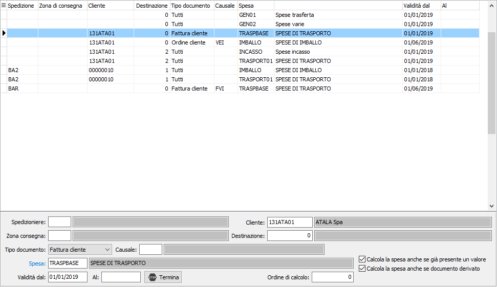

Assegnazione spese
La tabella "Assegnazione spese" contiene l'assegnazione delle singole spese ai documenti.
L’assegnazione può essere effettuata per spedizioniere, zona consegna, cliente, cliente/destinazione, tipo documento, tipo documento/causale, periodo di validità.
Sui documenti vengono assegnate tutte le spese generiche valide per il documento.

Per le spese di trasporto, imballo, incasso viene assegnata solo una spesa per tipologia, la ricerca della spesa viene effettuata con livello più basso di dettaglio, nel caso in cui siamo presenti più record validi (con lo stesso dettaglio) viene assegnata la spesa con il seguente criterio:
data fine più recente
data inizio più vecchia
ordine di calcolo (dal più piccolo al più grande)
codice spesa in ordine alfabetico
In fase di inserimento delle spese vengono proposti i flag “Calcola la spesa anche se già presente un valore” e “Calcola la spesa anche se documento derivato” presenti sulla spesa indicata ma possono essere modificati e sui documenti le spese vengono calcolate in base all’attivazione o meno dei flag qui indicati, indipendentemente da quanto indicato sul codice spesa. La funzionalità dei flag è quella indicata nel paragrafo precedente.